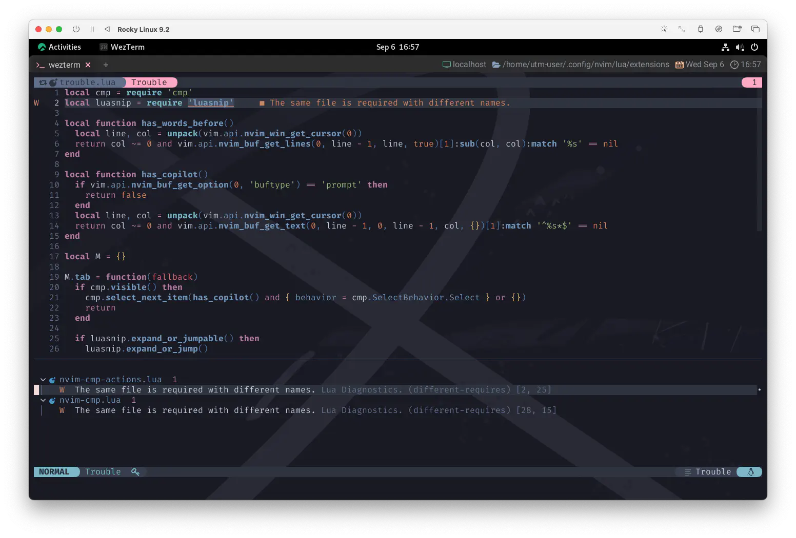
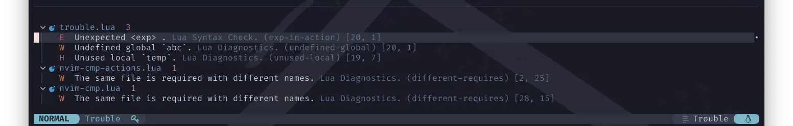
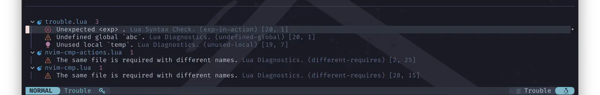

🚦 Trouble
いよいよラスト、本章のロードマップを踏破します。
満を持しての登場はTroubleです❗
A pretty list for showing diagnostics, references, telescope results, quickfix and location lists to help you solve all the trouble your code is causing.
診断、リファレンス、Telescope の結果を表示するための綺麗なリスト、 quickfix と location lists で、コードが引き起こす全ての問題を解決するのに役立ちます。
When I find myself in times of trouble
Mother Mary comes to me
僕がトラブルに巻き込まれている時
目の前におかあさんがいて
⚡️ Requirements
-
Neovim >= 0.7.2
-
Properly configured Neovim LSP client
-
nvim-web-devicons is optional to enable file icons
-
a theme with properly configured highlight groups for Neovim Diagnostics
-
or install 🌈 lsp-colors to automatically create the missing highlight groups
-
a patched font for the default severity and fold icons
もう今さら気にかける必要のあるものはありませんね😉
そのまま進んで行きましょう。
📦 Installation
Install the plugin with your preferred package manager:
お好みのパッケージマネージャでプラグインをインストールしてください：
お言葉に甘えて、いつも通りpackerで突き進みます...が❗
が...、ですよ❓
🔹 NOTICE: (packer.nvim)
例によって話が逸れるんですが、packer.nvimからこんなアナウンスが出てしまいましたね...😅
This repository is currently unmaintained. For the time being (as of August, 2023), it is recommended to use one of the following plugin managers instead:
このリポジトリは現在メンテナンスされていません。 当分の間（2023年8月現在）、代わりに以下のプラグインマネージャのいずれかを使用することを推奨します：
- lazy.nvim: Most stable and maintained plugin manager for Nvim.
Nvim 用の最も安定したプラグインマネージャ。
- pckr.nvim: Spiritual successor of packer.nvim. Functional but not as stable as lazy.nvim.
packer.nvim の精神的後継。機能的だが lazy.nvim ほど安定していない。
このサイトでpacker.nvimのページを書いてた時にも、既にそんな空気は漂ってましたが、...ねえ❓🥲
前回触れたnull-lsもそうですが、なんか過渡期にでも入ってるんでしょうか🙂
And when the borken-hearted people
Living in the world agree
傷ついてしまった人だって
受け入れてくれる世界に生きればいい
トラブル続きでおーばーみーです🙃
"For the time being" をどう受け取っていいのか、ちょっと悩みますが、
こうなってしまった以上はpacker.nvimからlazy.nvimへの移行を、次回簡単に取り上げます🫡
⚙️ Configuration
Setup
Trouble comes with the following defaults:
ということで、これもたくさんの設定項目がある訳なんですが、わたしはほぼデフォルトで使っています😅
変えてるのは一つだけです😊
local trouble = require 'trouble'
trouble.setup {
use_diagnostic_signs = true,
}
use {
'folke/trouble.nvim',
+ config = function() require 'extensions.trouble' end,
requires = 'nvim-tree/nvim-web-devicons',
}
There will be an answer
Let it be
答えは必ずあるんだから
なるようになるよ
🔹 use_diagnositc_signs
enabling this will use the signs defined in your lsp client
これを有効にすると、lsp クライアントで定義された記号が使用されます。
🚀 Usage
そしたら、キーマップも入れておきましょう❗
...オフィシャル設定のまんまですけどね😆
Commands
vim.keymap.set('n', '<leader>xx', function() trouble.open() end)
vim.keymap.set('n', '<leader>xw', function() trouble.open 'workspace_diagnostics' end)
vim.keymap.set('n', '<leader>xd', function() trouble.open 'document_diagnostics' end)
vim.keymap.set('n', '<leader>xq', function() trouble.open 'quickfix' end)
vim.keymap.set('n', '<leader>xl', function() trouble.open 'loclist' end)
vim.keymap.set('n', 'gR', function() trouble.open 'lsp_references' end)
vim.keymap.set('n', 'gn', function() trouble.next { skip_groups = true, jump = true } end)
vim.keymap.set('n', 'gp', function() trouble.previous { skip_groups = true, jump = true } end)
vim.keymap.set('n', 'gF', function() trouble.first { skip_groups = true, jump = true } end)
vim.keymap.set('n', 'gL', function() trouble.last { skip_groups = true, jump = true } end)
🎨 Colors
The table below shows all the highlight groups defined for Trouble.
以下の表は、Trouble に対して定義されたすべてのハイライト・グループを示している。
Troubleは有名なプラグインなので、これはカラーテーマが既に対応してくれていることも多いです🌈
And when the night is cloudy
There is still a light that shines on me
たとえ夜が曇っていたとしても
それでも僕を照らす光はある
Shine until tomorrow
let it be
明日まで輝き続ける
なるようになるよ
🔸 Try
そしたらやっぱりいつも通りインストールを終えて、trouble.luaを開いた状態でleaderxxとしてみましょう。

うん...。なんか別に意図してないんだけど、いい感じにトラブってましたね😅
見てお分かりの通り、ワークスペースにあるコードに対しては、ファイルを開いていない状態でも教えてくれます😉
...そして現実を突きつけてくれます⭐
上のスクリーンショットではWarningしかありませんが、ErrorやHintなんかも、もれなく突きつけてきます👹

...天使なのか悪魔なのかわかりません😇
Whisper words of wisdom
Let it be
知恵の言葉をささやく
なるようになるよ
🔹 Appearance
use_diagnositc_signsを設定しなかった場合(デフォルトfalse)は以下のようになります。

こっちの方がいいじゃんって思いますね❗わたしも今の今まで気づきませんでした🤣
なんでかって言うと、それは後述します。
ついでなので、わたしはこの機会に新しくこんなんしてみました😮
完全新規のファイルです😆
local signs = { Error = '', Warn = '', Info = '', Hint = '' }
for type, icon in pairs(signs) do
local hl = "DiagnosticSign" .. type
vim.fn.sign_define(hl, { text = icon, texthl = hl, numhl = hl })
end
require 'options'
require 'keybinds'
+require 'appearance'
require 'extensions'
わたしが使っているアイコンはTroubleのデフォルトとは異なっています。
signs = {
-- icons / text used for a diagnostic
error = "",
warning = "",
hint = "",
information = "",
other = "",
},
こっちもいいよね😆 もちろんお好みで❗
こうすると、ちゃんとsigncolumn(スクリーンショット左上) のアイコンとも統一されるんです😉
▪️ diagnostic-highlights
HIGHLIGHTS diagnostic-highlights
All highlights defined for diagnostics begin with `Diagnostic` followed by
the type of highlight (e.g., `Sign`, `Underline`, etc.) and the severity (e.g.
`Error`, `Warn`, etc.)
診断用に定義されたハイライトはすべて `Diagnostic` で始まり、
その後にハイライトの種類（例：`Sign`、`Underline` など）と
重要度（例：`Error`、`Warn` など）が続きます。
By default, highlights for signs, floating windows, and virtual text are linked to the
corresponding default highlight. Underline highlights are not linked and use their
own default highlight groups.
デフォルトでは、サイン、フローティングウィンドウ、仮想テキストのハイライトは
対応するデフォルトのハイライトにリンクされます。
アンダーラインのハイライトはリンクされずデフォルトのハイライトグループを使用します。
▪️ sign_define()
sign_define({name} [, {dict}]) sign_define() sign_define({list}) Define a new sign named {name} or modify the attributes of an existing sign. This is similar to the |:sign-define| command.
{name}という新しい符号を定義するか、既存の符号の属性を変更する。 これは |:sign-define| コマンドに似ています。
Prefix {name} with a unique text to avoid name collisions. There is no {group} like with placing signs.
名前の衝突を避けるため、{name}の前にユニークなテキストを付けます。 配置記号のような {group} はありません。
The {name} can be a String or a Number. The optional {dict} argument specifies the sign attributes. The following values are supported:
{name}には文字列または数値を指定します。 オプションの {dict} 引数は符号属性を指定します。
以下の値がサポートされています：
icon full path to the bitmap file for the sign.
linehl highlight group used for the whole line the sign is placed in.
numhl highlight group used for the line number where the sign is placed.
text text that is displayed when there is no icon or the GUI is not being used.
texthl highlight group used for the text item
culhl highlight group used for the text item when the cursor is on the same line
as the sign and 'cursorline' is enabled.
If the sign named {name} already exists, then the attributes of the sign are updated.
{name}という符号が既に存在する場合、その符号の属性が更新されます。
The one argument {list} can be used to define a list of signs. Each list item is a dictionary with the above items in {dict} and a "name" item for the sign name.
引数 {list} は、符号のリストを定義するために使用できます。 各リスト項目は、{dict}の上記の項目と、符号名の「name」項目を持つ辞書です。
Returns 0 on success and -1 on failure. When the one argument {list} is used, then returns a List of values one for each defined sign.
成功すると0を、失敗すると-1を返します。 引数{list}が1つの場合、定義された各符号に対して1つの値のリストを返します。
😮💨 Excuse
🦎 うんと、NerdFont (アイコンに使用) にちょっと前に大きめの変更があったんですね。
https://github.com/ryanoasis/nerd-fonts/issues/1190
🦖 そんで、このサイトも追随して、何も考えずパラメータ (アイコン) 変えて悦に浸っちゃってるんですね。
commit / (16.3. mason-lspconfig.nvim : lualine)
🐉 あとなんか、Neovim自体がこの辺りの仕様を途中で変えてたみたいなんですね。
https://github.com/folke/trouble.nvim/issues/52
diagnostic-highlightsについては、このサイトでは触れていませんでした。
🐲 なんですが...。
わたしの手元では、
前仕様の "diagnosticSign****" パラメータがず〜っと働いているフリをしていたわけで、
signcolumnにはEとかWすらも出ていなかったわけです...。
で、今回Troubleを見直していて、ようやくこのマジトラブルに気付いたわけです。
⭐控えめに言ってカオスでした⭐
🎼 It will be all right, just let it be.
いつもどおりではあるんですが、話がとっ散らかってしまいました...。
しかし朗報です❗16章はこれで完結です😆
「ほんと、がんばったんだねー🤗」
上の節でもちょっと触れましたが、タイミングというか巡り合わせが良いので、
次回は💤lazy.nvimを取り上げます。一気にお引越しを済ませちゃいましょう🚚
「ぜんっぜん終われへんやんけ...😑」と思われているかもしれませんが...、
次が最終章です❗
It will be all right, just let it be. 2
きっと大丈夫、そのままでいいんだよ。
1: Let It Be (by The Beatles): McCartney は、1968年の The Beatles ("the White Album") のセッションにまつわる緊迫した時期に、 母親の夢を見たことがきっかけで "Let It Be" のアイデアを思いついたと語っている。 (Mary Patricia McCartney は、彼が14歳の時に癌で亡くなっている。) 「母と再会できて嬉しかった。その夢を見ることができて、とても恵まれていると思った。それで "Let It Be" を書いたんだ」。